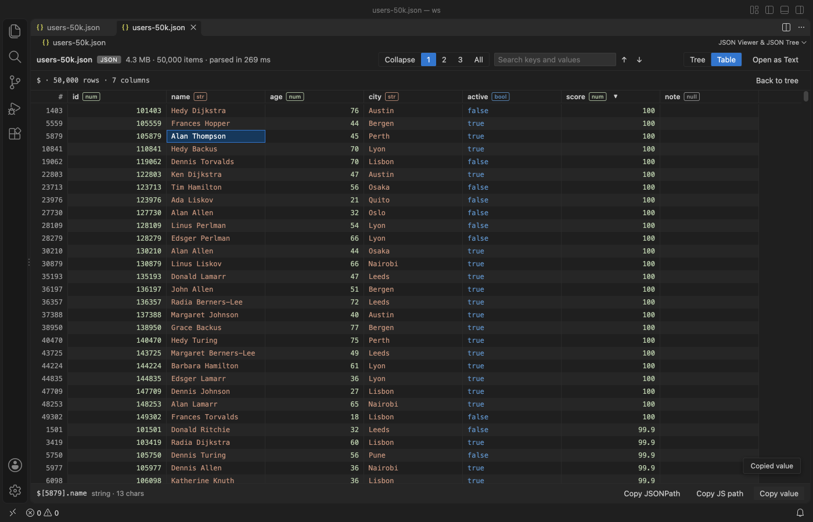
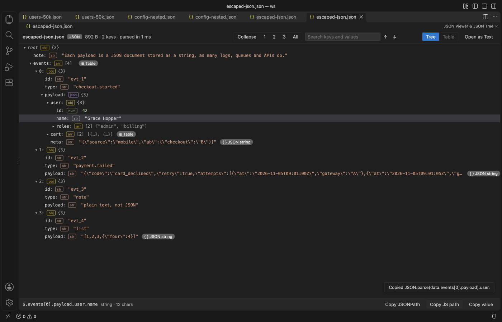
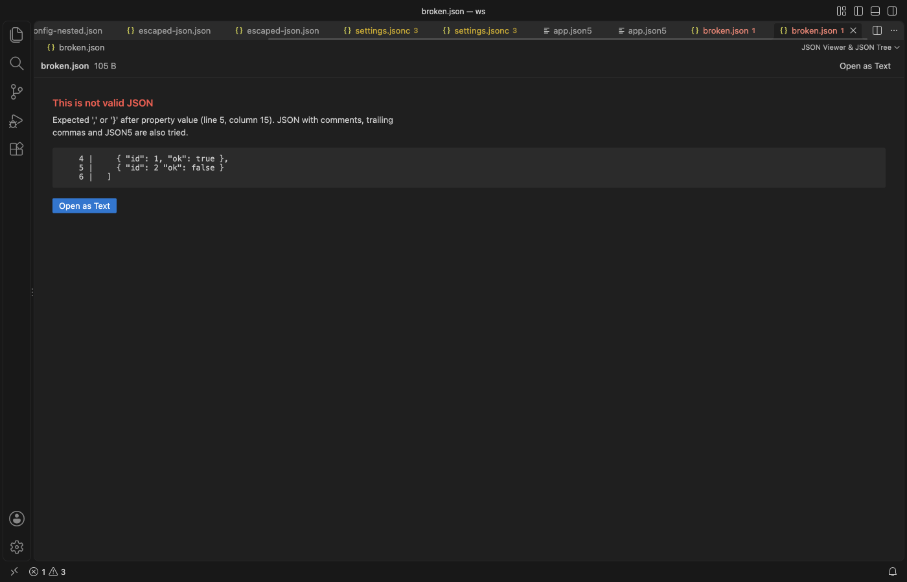
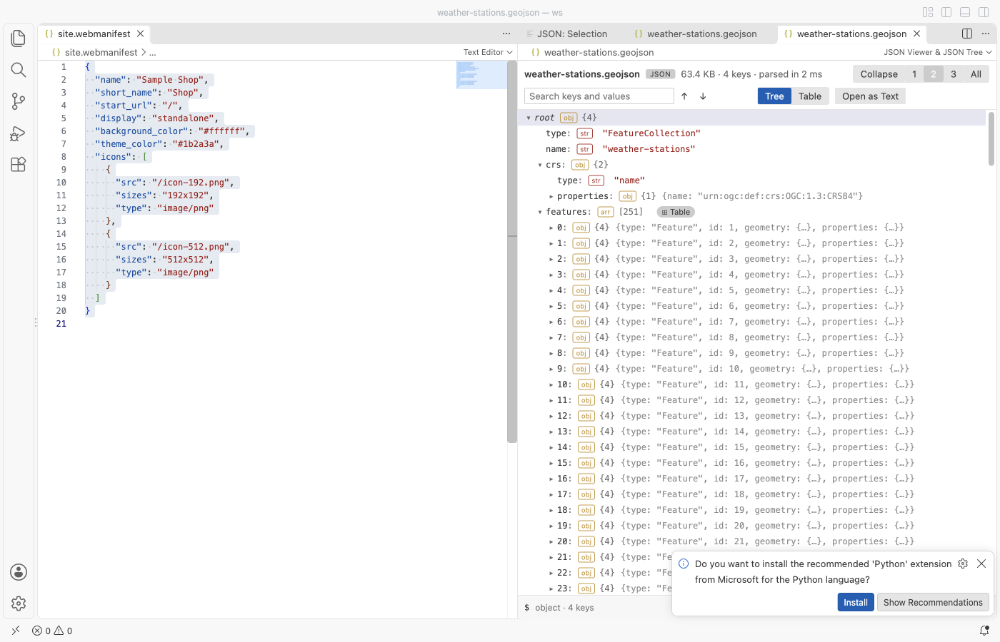

JSON Viewer & JSON Tree
JSON Viewer & JSON Tree, a VS Code extension by Zovo
See any JSON file as a fast, searchable tree, copy the path of any value in one click, and turn arrays of objects into a sortable table.
Free, MIT license. Needs VS Code 1.90.0 or newer. Extension ID zovo.zovo-json-tree-viewer, version 0.1.1.

A real VS Code window (1.142, Dark Modern) with the packaged extension installed. The file comes from scripts/make-samples.js.
- It stays quick on big files. A worker thread parses the file, and the view only draws the rows on screen. In the test suite a 30 MB array with 350,000 objects shows its first rows in about 0.6 s, and a search of the whole file takes under 0.1 s.
- It answers "where is this value?" Search keys and values with next and previous. Click any node to see its JSONPath (
$.items[3].id), then copy it, the JS path (data.items[3].id) or the value. - It opens what other viewers leave as text. Arrays of objects become a table with sortable columns. Strings that hold escaped JSON, such as log payloads and HAR response bodies, open as a nested tree. Comments, trailing commas and JSON5 are accepted.
Quick start
- Open a
.json,.jsonc,.json5,.geojson,.har,.ipynbor.webmanifestfile and click the tree icon at the top right of the editor. - Click nodes to expand them, or use the 1, 2, 3 and All buttons. Type in Search and press Enter.
The normal text editor stays the default, so editing works as before. To view JSON that is not saved in a file, select it (or copy it) and run "JSON Viewer: Open Selection or Clipboard in JSON Viewer".
Questions people ask
Is JSON Viewer & JSON Tree free?
Yes. JSON Viewer & JSON Tree is free and MIT licensed.
How do I install JSON Viewer & JSON Tree?
Click "Install in VS Code" above, or search for zovo.zovo-json-tree-viewer in the Extensions view.
What you can do
 |  |
|---|---|
| Table of an array of objects, sorted by score | Escaped JSON string opened as a tree |
 |  |
| Clear error with line and column | Follows your theme, light or dark |
Tree
Each row shows the key, a type badge (obj, arr, str, num, bool, null) and the child count. Closed objects show a short preview such as {host: "0.0.0.0", port: 8443, tls: {…}}. Expand to level 1, 2, 3 or all, or collapse to the root. Arrow keys move, Right opens, Left closes or goes to the parent, Enter toggles.
Search
Search covers every key and value in the file, not only the open rows, and ignores case. Enter or ↓ goes to the next match, Shift+Enter or ↑ goes back. The tree opens the parents of each match and highlights the matching rows.
Copy
The bottom bar shows the selected node's JSONPath and type. Copy JSONPath, Copy JS path and Copy value put it on the clipboard. Keys that are not plain names are quoted, as in $['odd keys'] and data["odd keys"]. Strings are copied as plain text and everything else as formatted JSON.
Table
Arrays of objects get a Table chip, and a root array opens from the Table tab. There is one column per key, with its type. Click a header to sort it up, again to sort it down, and a third time to clear the sort. Missing values sort last. Click a cell to get its path and copy its value.
Escaped JSON
When a string holds a JSON object or array, the row gets a JSON string chip. Click it to read the string as a tree. Paths inside it come out as JSON.parse(data.events[0].payload).user.id.
Formats
.json, .jsonc (comments and trailing commas), .json5, .geojson, .har, .ipynb and .webmanifest open from the editor title or the Explorer menu. Any other file opens through the command "JSON Viewer: Open in JSON Viewer". UTF-8 and UTF-16 files with a byte order mark both work.
Settings
| Setting | Default | What it does |
|---|---|---|
jsonTreeViewer.maxFileMB | 200 | Largest file the viewer reads. Bigger files show a message and are not read. Parsing takes several times the file size in memory. |
jsonTreeViewer.askForRating | true | Ask one time for a Marketplace rating after a few days of use. |
Privacy
The extension works offline. It makes no network calls and has no telemetry. The viewer page has a strict Content Security Policy with no remote sources, and all file text is shown as text, never as HTML. Files are opened read-only.
Limits
- Files over 200 MB (the setting goes up to 1 GB) are not opened. Use the text editor or a streaming tool such as jq for those.
- Expand all stops at 1,000,000 visible rows, and search stops at 10,000 matches. Both show a note when that happens.
- Numbers beyond 2^53 lose precision, as in JavaScript's own JSON.parse.
- The table shows the first 200 keys as columns.
- JSONPath for nodes inside an escaped JSON string just continues the outer path. Use the JS path for an exact address.
License
MIT. JSON5 parsing uses the json5 package (MIT), listed in THIRD-PARTY-NOTICES.txt.
Install JSON Viewer & JSON Tree
Click the button to open VS Code and install it, or press Ctrl+P (Cmd+P on macOS) in VS Code and run ext install zovo.zovo-json-tree-viewer.
Free, MIT license. Needs VS Code 1.90.0 or newer. Extension ID zovo.zovo-json-tree-viewer, version 0.1.1.
Source code and issues are on GitHub.
Support this work
If this extension saves you time, you can support the work on GitHub Sponsors. Monthly tiers start at $5, and one-time tiers start at $15. Sponsorship is optional, and the tool works the same without it.